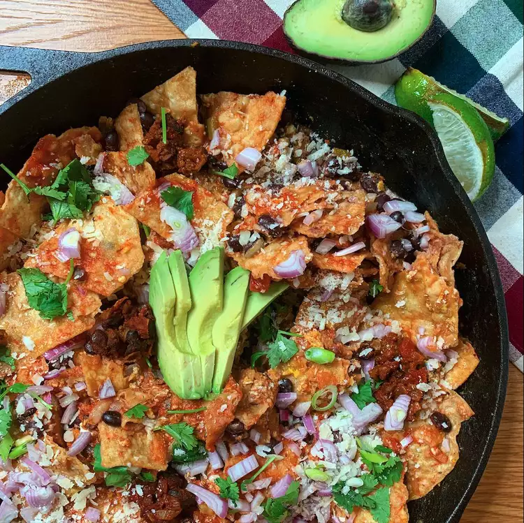

How to make Chilaquiles

Description
This is a traditional chilaquiles recipe that is great to eat for breakfast with fried eggs or for dinner as a main course with a salad.
Ingredients
- 8 fresh tomatillos, husks removed
- 1 white onion, coarsely chopped
- ¾ cup chopped cilantro
- 1 poblano pepper, peeled and seeded
- 1 jalapeño pepper, seeded
- 4 cloves garlic
- 2 leaves fresh mint
- salt to taste
- 3 cups shredded cooked chicken
- ¼ cup vegetable oil
- 12 (6 inch) white corn tortillas, cut into 3 strips
- ¾ cup shredded pepper Jack cheese
- ¾ cup shredded Monterey Jack cheese
8 servings
Steps
- Preheat the oven to 375 degrees F (190 degrees C).
- Place tomatillos, onion, cilantro, poblano pepper, jalapeño pepper, garlic, mint, and salt in a blender; blend until smooth.
Transfer to a saucepan; bring to a gentle boil. Reduce heat to medium-low; simmer until thickened, stirring often, about 10 minutes.
Stir in chicken; simmer until heated through, about 5 minutes more.
- Heat oil in a large skillet over medium heat. Fry tortilla strips, in batches, until crisp and lightly browned, 5 to 7 minutes. Drain on a paper towel-lined plate.
- Layer 1/2 fried tortilla strips in a 2-quart baking dish; spread 1/2 tomatillo sauce over top.
Combine pepper Jack cheese and Monterey Jack cheese in a bowl; sprinkle 1/2 on tomatillo sauce. Repeat layers.
- Bake in the preheated oven until cheese is golden and bubbly, 30 to 35 minutes. Cool before serving, about 5 minutes.
Back to Home